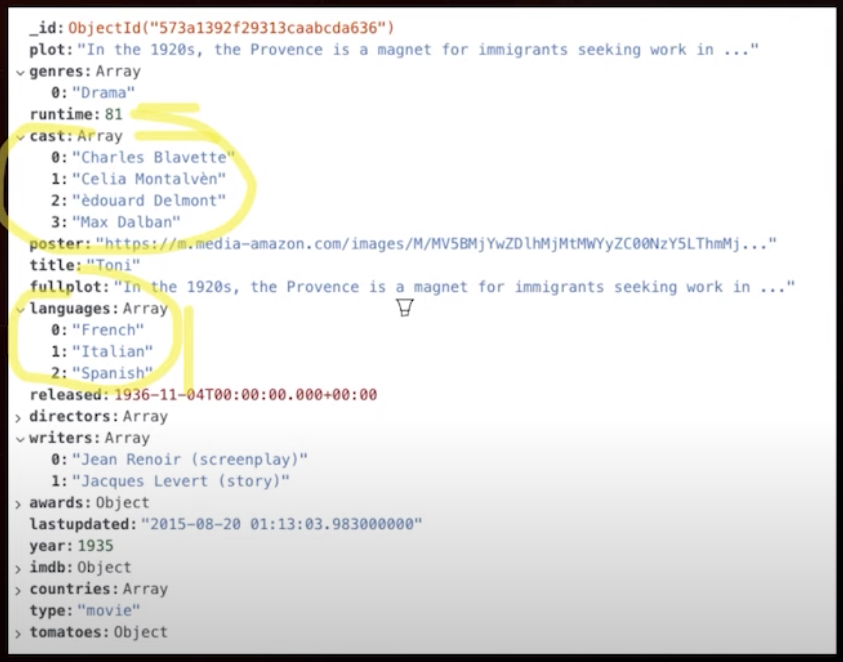
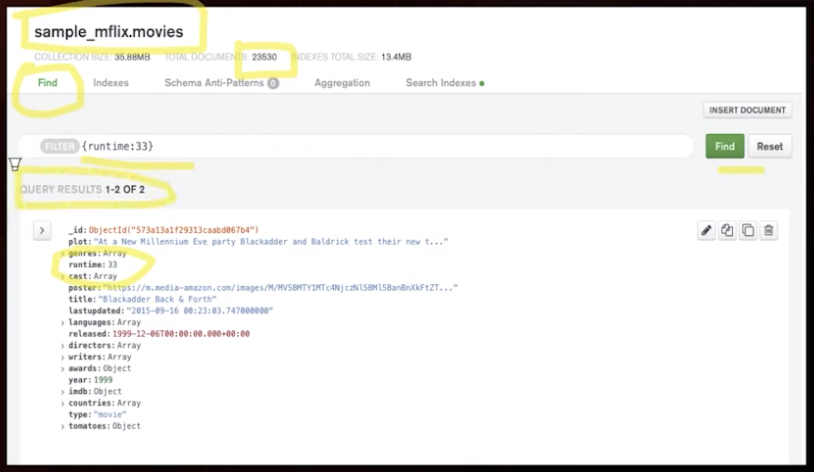
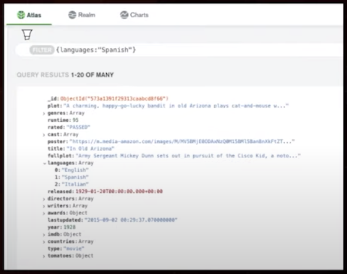
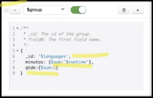
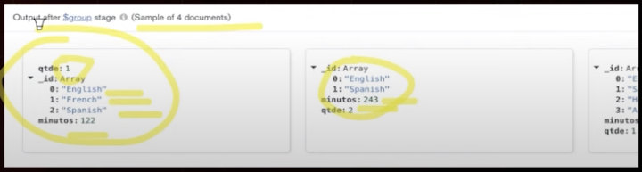
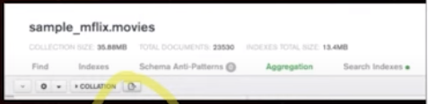
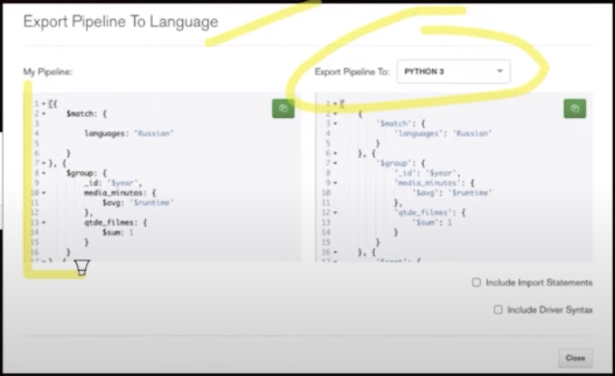
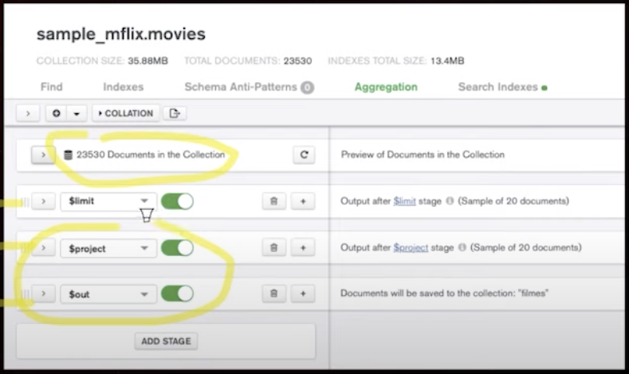
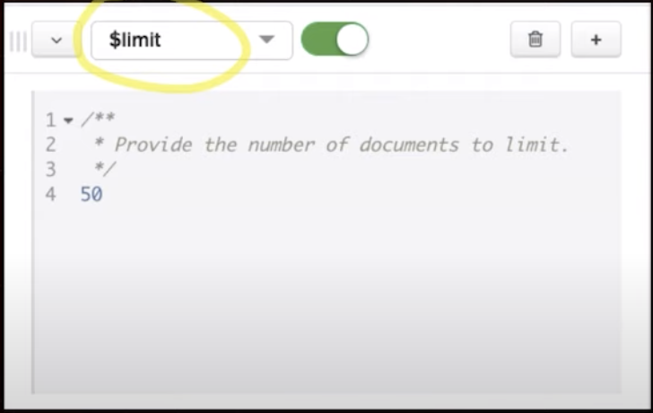
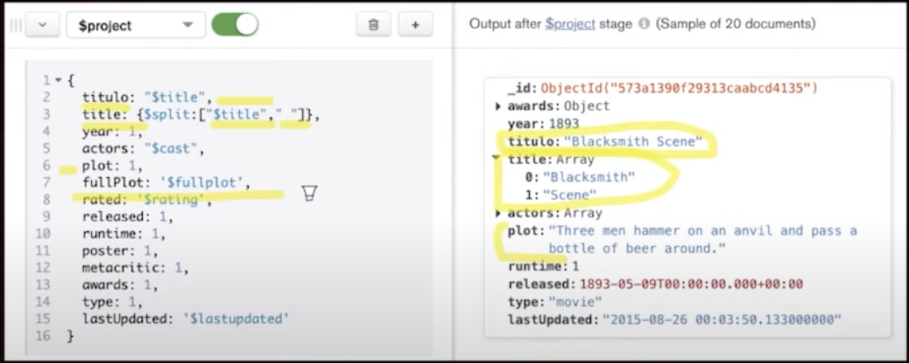

Disciplinas
-
BANCO DE DADOS-T01-2024-1 Concluído
Materiais
Vídeo 2 - Banco de Dados - MongoDB – Parte 2. sendProfessor ministrante: José Eduardo Santarem Segundo.
Conteúdo
MongoDB.
MongoDB.
 SELECIONAR DADOS.O processo de pesquisa no mongoDB é bem diferente dos bancos relacionais tradicionais.
Na plataforma Cloud (Atlas), podemos usar a ferramenta "Filter” na opção“Find” para os filtros.
Realizando uma busca em um campo do tipo array.
Árabe ou Russo:
FILTER {languages: {$in: ["Arabic", "Russia"]}}

AGGREGATION FRAMEWORK.
- Base para realizar consultas.
- Conjunto de ferramentas de análise que permite realizar vários tipos de consultas em documentos em uma ou mais coleções.
- Baseada no conceito de Pipeline.
- Pipeline (imagine uma esteira industrial).
- A entrada é uma coleção MongoDB, que vai sendo submetida a etapas sequenciais, cada uma com sua operação específica.
- Cada etapa recebe, como entrada, o resultado da saída da etapa anterior, independente do resultado que ela tiver gerado.
- E as entradas e saídas para todas as etapas são documentos, ou seja, um fluxo de documentos.
AGGREGATION FRAMEWORK - PIPELINE.
- O resultado final do pipeline é justamente o conjunto de documentos que se espera.
- É possível que as etapas se repitam no pipeline, dependendo do resultado que se espera.
- Há diversas possibilidades de operações que podem ser realizadas no pipeline MongoDB.
- A ferramenta Atlas possibilita construir pipelines de agregação.
ESTÁGIO/ETAPA - $match.
- Uma das operações mais simples que existem no MongoDB, ela aplica um filtro ao conjunto de documentos.
- Exemplo: filtro em dois campos (cast e languages)
ESTÁGIO/ETAPA - $group.
- Uma etapa de um pipeline possibilita uma saída que pode ser bem diferente do documento original.
- É muito comum que, ao passar por uma etapa, o conjunto de documentos passe a ter uma nova construção estrutural (esquema) diferente do seu documento original.
- A etapa $group pode aplicar vários operadores de grupo (parecido com SQL):
- $sum, $avg, $max, $min, $accumulator, entre outros
Exemplo: agrupamento por idiomas (languages).
No agrupamento é realizada a agregação de valor por minutos e também são quantificados os grupos.
 ATLAS – EXPORTAÇÃO PIPELINE.
O Atlas permite que a estrutura do Pipeline seja exportada como código do próprio mongo ou já adaptado para algumas linguagens.
 NOVA BASE POR PROJEÇÃO.
  